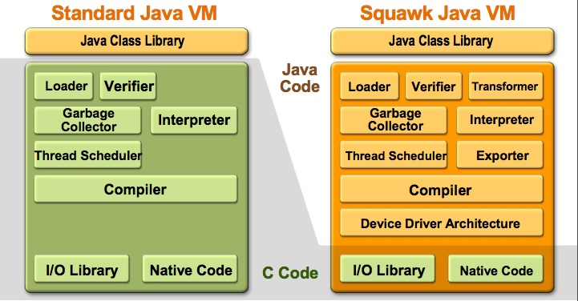
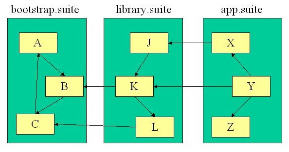

The main goal of the Squawk virtual machine project is to write as much of the virtual machine as possible in Java, for portability, ease of debugging, and maintainability (inspired by the Smalltalk Squeak project). Traditionally, most JVMs are written in C/C++. Squawk aims at pushing the bar and writing most of the JVM in Java.

Squawk is fully Java compliant and CLDC 1.1-compatible (i.e., it's Java ME).
The current architecture of the Squawk VM was inspired in part by the Klein VM architecture. In particular, it is (mostly) implemented in the language that it executes (Java); its components include:
Other features of the Squawk architecture include:
A compact bytecode instruction set
Suites
A suite is a collection of classes. Each class in a suite only refers to other classes in the suite or to a class in a parent suite. That is, a chain of suites is a transitive closure of classes as shown below:

The representation of classes in a suite is very compact as they are all prelinked to each other. On average, suites are one third of the size of class files.Once a suite is closed (i.e. cannot have any more classes loaded into it), it is immutable. An immutable suite can be saved to and loaded from a file. This results in a significantly reduced start up time when running an application from a suite (as opposed to a dynamically loaded set of classes).
Isolates
An isolate is a mechanism by which an application is represented as an object. In Squawk, one or more applications can run in the single JVM. Conceptually, each application is completely isolated from all other applications. Given the immutability of suites, the isolate implementation in Squawk shares common suites between applications. This can significantly reduce the memory footprint of each application, which is particularly important in the embedded device space.
In addition to the standard semantics of isolates, the Squawk implementation has one extra feature: isolate migration. That is, an isolate running on one Squawk VM instance can be paused, serialized to a file or over a network connection and restarted in another Squawk VM instance. This feature is a direct result of certain architectural choices made in Squawk such as using a green threaded model, representing all VM structures (including thread stacks) as objects and not implementing a general native code interface such as the JNI. The isolate migration mechanism also works between two VM instances running on platforms that have a different machine word endianess. A compelling use of this mechanism is for deploying a configured running application to a device running a Squawk VM that does not have the resources required for standard class file loading and Java object serialization.
Nik Shaylor (alumnus), Doug Simon (alumnus), Cristina Cifuentes, Derek White, Eric Arseneau.
Interns: David Liu (Dec 04-May 05), Martin Morissette (Jan-Jun 06), Simon Long (Jan-May 06).
Back to the Squawk Project
Contact: Eric Arseneau